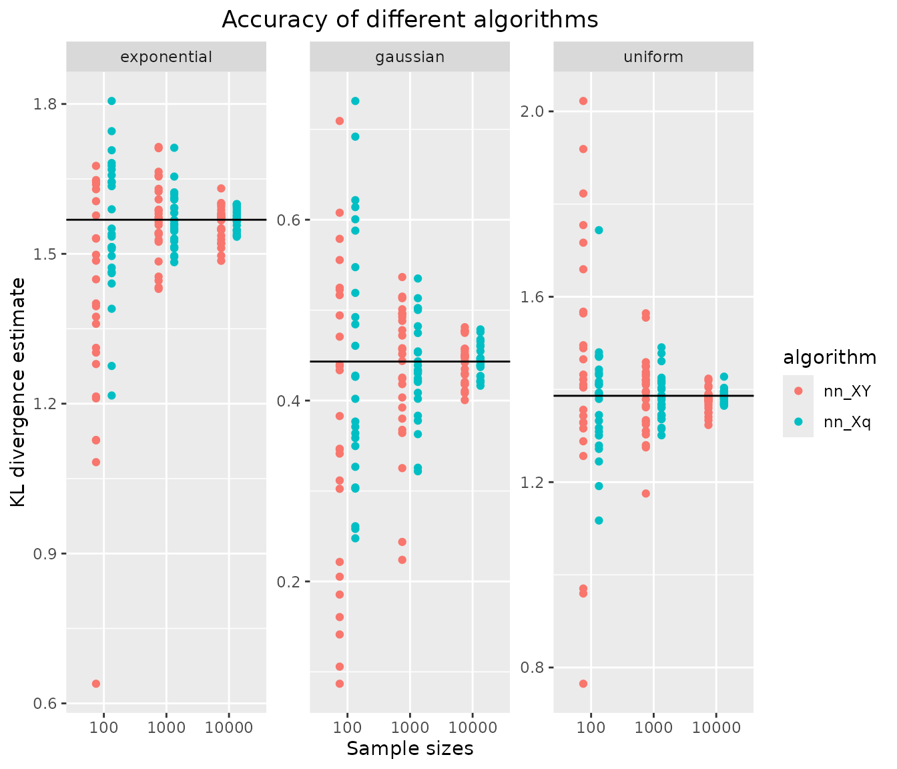

Comparing 1- vs. 2-sample estimation in 1-D
Source:vignettes/articles/comparison-1sample-2sample-1D.Rmd
comparison-1sample-2sample-1D.RmdSpecification of simulation scenario
Distributions and analytical KL-D
We investigate the following pairs of distributions, for which analytical KL divergence values are known:
- \(\text{Exp}(1)\) vs. \(\text{Exp}(1/12)\),
- \(\mathcal{N}(0,1)\) vs. \(\mathcal{N}(1,2^2)\),
- \(\mathcal{U}(1,2)\) vs. \(\mathcal{U}(0,4)\).
p <- list(
exponential = list(lambda1 = 1, lambda2 = 1/12),
gaussian = list(mu1 = 0, sigma1 = 1, mu2 = 1, sigma2 = 2^2),
uniform = list(a1 = 1, b1 = 2, a2 = 0, b2 = 4)
)
distributions <- list(
exponential = list(
samples = function(n, m) {
X <- rexp(n, rate = p$exponential$lambda1)
Y <- rexp(m, rate = p$exponential$lambda2)
list(X = X, Y = Y)
},
q = function(x) dexp(x, rate = p$exponential$lambda2),
kld = do.call(kld_exponential, p$exponential)
),
gaussian = list(
samples = function(n, m) {
X <- rnorm(n, mean = p$gaussian$mu1, sd = sqrt(p$gaussian$sigma1))
Y <- rnorm(m, mean = p$gaussian$mu2, sd = sqrt(p$gaussian$sigma2))
list(X = X, Y = Y)
},
q = function(x) dnorm(x, mean = p$gaussian$mu2, sd = sqrt(p$gaussian$sigma2)),
kld = do.call(kld_gaussian, p$gaussian)
),
uniform = list(
samples = function(n, m) {
X <- runif(n, min = p$uniform$a1, max = p$uniform$b1)
Y <- runif(m, min = p$uniform$a2, max = p$uniform$b2)
list(X = X, Y = Y)
},
q = function(x) dunif(x, min = p$uniform$a2, max = p$uniform$b2),
kld = do.call(kld_uniform, p$uniform)
)
)Analytical values for Kullback-Leibler divergences in test cases:
vapply(distributions, function(x) x$kld, 1)
#> exponential gaussian uniform
#> 1.5682400 0.4431472 1.3862944Simulation scenarios
For each of the distributions specified above, samples of different sizes are drawn, with several replicates per distribution and sample size.
samplesize <- 10^(2:4)
nRep <- 25L
scenarios <- combinations(
distribution = names(distributions),
sample.size = samplesize,
replicate = 1:nRep
)Algorithms
The following algorithms are considered:
algorithms_XY <- list(
nn_XY = function(X, Y) kld_est_nn(X, Y)
)
algorithms_Xq <- list(
nn_Xq = function(X, q) kld_est_nn(X, q = q)
)
nAlgoXY <- length(algorithms_XY)
nAlgoXq <- length(algorithms_Xq)
nmAlgo <- c(names(algorithms_XY),names(algorithms_Xq))Comparison
Simulation
# allocating results matrices
nscenario <- nrow(scenarios)
runtime <- kld <- matrix(nrow = nscenario,
ncol = nAlgoXY+nAlgoXq,
dimnames = list(NULL, nmAlgo))
for (i in 1:nscenario) {
dist <- scenarios$distribution[i]
n <- scenarios$sample.size[i]
samples <- distributions[[dist]]$sample(n = n, m = n)
X <- samples$X
Y <- samples$Y
q <- distributions[[dist]]$q
# different algorithms are evaluated on the same samples
for (j in 1:nAlgoXY) {
algo <- algorithms_XY[[j]]
start_time <- Sys.time()
kld[i,j] <- algo(X, Y)
end_time <- Sys.time()
runtime[i,j] <- end_time - start_time
}
for (j in 1:nAlgoXq) {
nj <- nAlgoXY+j
algo <- algorithms_Xq[[j]]
start_time <- Sys.time()
kld[i,nj] <- algo(X, q)
end_time <- Sys.time()
runtime[i,nj] <- end_time - start_time
}
}Post-processing: combine scenarios, kld and
runtime into a single data frame
tmp1 <- cbind(scenarios, kld) |> melt(measure.vars = nmAlgo,
value.name = "kld",
variable.name = "algorithm")
tmp2 <- cbind(scenarios, runtime) |> melt(measure.vars = nmAlgo,
value.name = "runtime",
variable.name = "algorithm")
results <- merge(tmp1,tmp2)
results$sample.size <- as.factor(results$sample.size)
rm(tmp1,tmp2)Results: Accuracy of KL divergence estimators
ggplot(results, aes(x=sample.size, y=kld, color=algorithm)) +
geom_jitter(position=position_dodge(.5)) +
facet_wrap("distribution", scales = "free_y") +
geom_hline(data = data.frame(distribution = names(distributions),
kldtrue = vapply(distributions, function(x) x$kld,1)),
aes(yintercept = kldtrue)) +
xlab("Sample sizes") + ylab("KL divergence estimate") +
ggtitle("Accuracy of different algorithms") +
theme(plot.title = element_text(hjust = 0.5))
\(\Rightarrow\) 1-sample estimation is more accurate than 2-sample estimation in all three 1-D test cases and for all sample sizes, which is expected since more information is available in the 1-sample case.
However, notice that bias reduction by kld_est_brnn is
not possible in 1-sample estimation. Hence, in high-dimensional cases
where the density of the approximate distribution \(Q\) is available, it may be preferable to
simulate a (large) sample from \(Q\)
and use bias reduction on the two-sample problem, rather than using
kld_est_nn in the 1-sample variant.